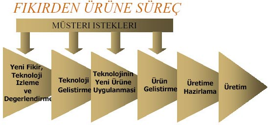

|
Doç.
Dr. M. Yalçýn Tanes
Arçelik
Araþtýrma ve Teknoloji Geliþtirme Merkezi
Ýstanbul, 3 Ekim 2002
(Bu
makale, ÝSO Odakule Meclis Salonu'nda, 3 Ekim 2002 tarihinde
Ýstanbul Sanayi Odasý ile Teknoloji Yönetimi Derneði'nin ortaklaþa
düzenledikleri "Ürün Geliþtirmenin Olmazsa Olmazlarý"
konulu seminerde yapýlan bir sunumdan derlenmiþtir.
Bu makalenin 3MB boyutlu pdf formatýndaki versiyonu www.tyd.org.tr/etkinlik.html
adresinden indirilebilir)
IÇERIK:
-
Tanimlar
-
Yenilikcilik / Inovasyon Süreci
-
Arçelik Teknoloji Gelistirme Deneyimi
-
Ürün Gelistirme Süreci
-
Ar-Ge Performansinin Ölçümü
-
Sonsöz
TANIMLAR:
-
TEKNOLOJI
Bireyin veya kurulusun bir hizmeti yapmak veya bir ürünü
ortaya koymak için sahip oldugu bilgi, beceri ve
yeteneklerin tümü onun teknolojisidir.
Teknolojisi ona, "BEN BU ISI YAPABILIRIM" dedirtmektedir.
- TEMEL
ARASTIRMA
Doganin sirlarina ait bilgileri ögrenmeyi hedefleyen çalismalar
"Temel Arastirma" dir.
- MÜHENDISLIK
Bilimin sagladigi bilgileri teknoloji haline getiren ve
insanin kullanimina hazir haldeki ürünler olarak sunan metodoloji
ve faaliyetlerin tümüne Mühendislik denir.
- UYGULAMALI
ARASTIRMA / TEKNOLOJI GELISTIRME
Bilginin teknolojiye dönüstürülmesi "Uygulamali Arastirma"
veya "Teknoloji Gelistirme" dir.
- (ÜRÜN)
GELISTIRME
Teknolojinin ürüne ve üretim yöntemlerine dönüstürülmesi
için uygulanan mühendislik faaliyeti "Ürün/Üretim Gelistirme"
dir.
- YENILIKCILIK
= INOVASYON
Yeni bir fikrin dogusundan, insanlara yararli ve onlarin
satinalacagi bir ürün haline getirilmesine kadar geçen süreçtir.
YENILIKCILIK
/ INOVASYON SÜRECI:
- 21.
yy'da teknoloji sirketlerin elindeki en önemli güçlerden
biridir.
-
Türkiye'de "Ürün Gelistirme" yeni baslamis, "Teknoloji
Gelistirme" ise ......
-
Türkiye "Teknoloji Ithal Eden Ülke" konumundadir.
-
Teknoloji/Ürün gelistirme için olumlu adimlar vardir. Acaba
yeterli midir?
TÜRKIYE'de TEKNOLOJI/ÜRÜN GELISTIRME KÜLTÜRÜ
-
21. yy'da teknoloji sirketlerin elindeki en önemli güçlerden
biridir.
-
Türkiye'de "Ürün Gelistirme" yeni baslamis, "Teknoloji
Gelistirme" ise ......
-
Türkiye "Teknoloji Ithal Eden Ülke" konumundadir.
-
Teknoloji/Ürün gelistirme için olumlu adimlar vardir. Acaba
yeterli midir?
TEHLIKE
Düsük
seviyedeki teknolojiler ile dünya sanayii karsisinda iç ve
dis pazarlarda rekabette korumasiz kalmak ve yalniz ucuz isgücüne
dayanarak üretim yapabilen ve her an üçüncü dünya ülkelerine
elindeki isi kaptirabilecek duruma düsmek
FIRSAT
Genç,
iyi egitim görmüs kadrolar ile, yeni teknolojileri verimli
sekilde kullanarak, gelistirerek, güncel ve özgün teknolojilerle
dünya standartlarini yakalamak ve asmak üzere kaynaklari verimli
olarak yönetmek

FIKIRDEN
ÜRÜNE SÜREÇ
-
Süreç evrensel
- Organizasyon
her sirketin kültürü ve ihtiyacina göre farkli
- 1
asamali (Tüm Ar-Ge süreci tek bir birimde)
- 2
asamali (Teknoloji Gelistirme - Ürün Gelistirme birimleri)
- 3
asamali (Sirket çapinda Teknoloji Gelistirme - Öncü
Ürün Gelistirme - Ürün Tasarimi ve Uygulama)
- Global
(Tüm dünyaya yayilmis enternasyonal Ar-Ge birimleri)
Ar-Ge
KUSAKLARI
1. Kusak : Ar-Ge
bir yetenek isidir. Sanattir.
2.
Kusak (1950 sonrasi) : Ar-Ge
bir metodoloji ve plan isidir.
3.
Kusak (1980 sonrasi) : Ar-Ge
müsteri için yapilir.
4.
Kusak (2000 sonrasi) : Ar-Ge
tüm paydaslarca beraber yapilir.
|